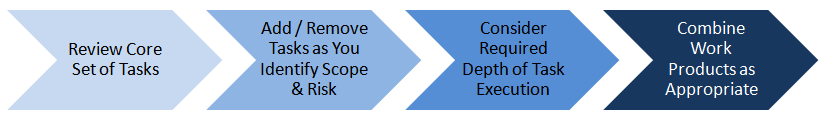
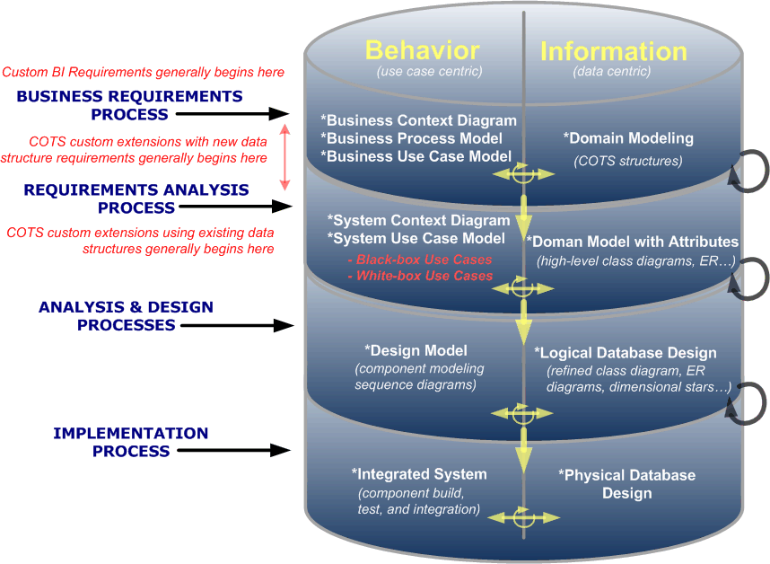

OUM |
Business Intelligence (BI) Supplemental Guide |
||
Method Navigation |
Current Page Navigation |
||
|
|
||||||||
Business Intelligence refers to technologies, applications, and practices for the collection, integration, analysis, and presentation of business information (Wikipedia, 2008). The Business Intelligence (BI) view focuses on those OUM activities and tasks that are typically leveraged for Business Intelligence implementation engagements. The OUM BI view further breaks down this BI-specific fous into the following two implementation engagements types:
In general, Business Intelligence solutions are neither 100% custom developed (Custom BI) nor 100% product based (BI Applications). This means that BI implementation teams need to tailor their use of the OUM BI view to be fit-for-purpose. They must integrate the product or reused components with custom components resulting in the final solution. The BI Supplemental Activity Guidelines provide recommended versus optional usage guidance for each activity and its associated tasks.
Project planning, execution, and management activities are sourced directly from the from the OUM Manage focus area. This allows you to plan and manage projects in a consistent and repeatable way.
The Oracle Unified Method provides a comprehensive set of tasks and activities for conducting a broad range of software implementation projects. Each task represents a step in the process of defining and implementing a software system. OUM also recognizes that that too much method can be as risky as too little and recommends a four step approach for tailoring the process to suit a particular project. The objective of the tailoring exercise should be to identify the minimum usable subset of tasks and consolidated work products that will allow the project to be successfully completed and appropriately documented, without forcing excess "ceremony" or superfluous documentation.

1. Start with a core set of tasks. OUM and the BI view provides primary mechanisms to help project teams determine the appropriate set of tasks for a given project.
The BI view allows you to access the OUM Project Workplan. The OUM Project Workplan is a sample project workplan that can quickly reflect the BI view and then be further tailored for the specific BI engagement. It also allows the project to be managed using a plan that supports varying levels of granularity. A project manager may choose to track much of the project at the activity level, while managing a few critical activities at the task level. This allows the project manager to be more focused on project risk areas, such as work that is being performed remotely or offshore.
2. Add or remove tasks as you identify scope and risk.
Once you have determined a core set of tasks – based on the characteristics of the project consider whether it is necessary to add tasks based on scope and risk. For example, if your are obligated to provide performance testing as part of your project, you should examine the tasks and activities related to the Performance Management process. The same would be true for processes, such as Documentation, Transition, and Organizational Change Management.
3. Consider the depth to which it is necessary to execute specific tasks in a given phase or iteration.
This step may be the most important. Placing a task into an OUM iteration plan is not a binary event. Tasks are not all or nothing, but merely represent a step in the process. You must consider the depth to which you should execute tasks on your project as a whole, or within a given phase or iteration. Too much or too little depth or "ceremony" are both risky. Under the proper circumstances, spending the time to simply consider a task will constitute executing the task. This is an appropriate practice and is often preferable to eliminating the task altogether.
Tasks are there to remind you of the process and order of the work, not to force you to perform unnecessary work or create voluminous documentation. Also, under the proper circumstances it is may be appropriate for the output of a task - the work product - to be tacit knowledge in the head of a project team member, rather than a model or document (as long as that project team member is able to communicate that knowledge to the other members of the team, as required).
4. Combine work products into an appropriate set of consolidated work products or deliverables.
Most OUM tasks are accompanied by a work product template. Templates are provided for the convenience of the project team. OUM does not recommend that every one of these templates be used on every project, even for the tasks that appear on the project work plan. While OUM values documents and deliverables – when they are necessary – it places a higher value on working software that supports the needs of the business. It is imperative that teams make thoughtful decisions about the number and depth of the work products, especially documents, that are produced on a project.
The BI view supports the concept that work products should be pulled together into a smaller number of consolidated artifacts. This supports the "fit for purpose" theme upon which OUM is built. It would not be uncommon for consolidated artifacts to be identified as key deliverables for the project. These consolidated artifacts are not necessarily documents. For example, one such artifact will be the "Production-Ready System," which OUM considers to be one of the most important work products for any project...a working system.
Note: Creating consolidated artifacts does not mean eliminating implementation processes. Project teams should still work through the defined process at a depth and level of ceremony that is appropriate to the project. Limiting "documentation" to a pragmatic set of consolidated artifacts helps maintain the project's focus on collaboration and the creation of working software and away from effort wasted on creating comprehensive, yet difficult-to-maintain documentation.
To best understand the philosophical approach that OUM takes to software implementation, go to Oracle’s Full Lifecycle Method for Deploying Oracle-Based Business Solutions for further information on the scalability and adaptability of OUM.
By adopting OUM's iterative and incremental approach, implementation teams create a project environment that is more responsive to change – and to the deepening understanding of business requirements that occurs during a project – without sacrificing the ability to manage cost and schedule. This "think a little, do a little...think a little more, do a little more" approach means that task outputs, work products, consolidated artifacts, etc. are developed iteratively across a defined set of phases, iterations, or sprints.
OUM recommends looking at breadth before depth. For example, an early iteration the use case model might consist of a list of use cases, actors, and goals – some of which are supported fully by the COTS products and some which may not be fully supported. As the project progresses over subsequent iterations, the use cases which require custom software might be further elaborated with a brief description, a main success scenario, and, potentially, a list of exception scenarios. Ultimately, the use case model is detailed to a depth that allows the requirements for the system to be unambiguously documented. Of course, this choice of depth depends on the characteristics of the project. Co-located teams of empowered business users and implementers – who maintain a high degree of interaction and communication – require less documentation than projects with non co-located teams or projects for which the final requirements authority is held apart from the on-the-ground team.
There are several key concepts that are important to understand in order to fully appreciate the BI implementation approach for delivering an engagement using OUM.
| Key Concept | Description |
|---|---|
Business Process Models and Use Cases for Requirements Gathering |
The OUM BI view employs techniques such as interviews and workshops to gain a comprehensive understanding of business requirements that are documented using business process models and use cases. Use cases complement business process models in a number of important ways. See the OUM Method Overview to understand more about the relationship between use case modeling and business process modeling. |
Black-Box Use Case |
Black-box use cases capture requirements at the level of observable behavior, but do not reveal the internal workings of the business or system. Most use cases are written at the black-box level to maintain the separation between requirements and design. Within this view, black-box use cases are most applicable to development of a custom BI system, but would also apply to the implementation of Custom BI and BI Applications (such as, EPM) or product-based systems that require custom extensions that support new data entry or reporting requirements. |
White-Box Use Case |
White-box use cases capture requirements that reveal the internal workings of a business or system. White-box use cases detail how the system will satisfy the requirements. White-box use cases are applicable on projects that will implement BI Applications, such as EPM product-based systems to document requirements regarding changes in the way the product needs to work. |
Black-Box versus White-Box |
It is important to understand how black-box and white-box use cases are applied to support BI projects. Black-box use cases are typically used to capture requirements related to the development of new data entry, display, and reporting mechanisms. This includes new custom data entry and report components or data entry and reporting extensions being made to a BI product (BI Applications). White box use cases are used to capture requirements related to the development or customization of internal data extraction, transformation, and loading components. These requirements typically result in the configuration or customization of existing BI Applications. When using white-box use cases, remember to keep the use cases at the level of requirements and not to delve into system design. |
Domain Model |
A comprehensive data model exists for BI Apps products. A domain model is used to collect data requirements for custom developed BI systems or to capture data requirements for custom extensions to BI Application products (such as EPM). The domain model is the primary input into the logical database design. OUM recommends, but does not require, the use of a UML class model for this purpose. Project teams should choose a modeling approach that is appropriate to the type of data being modeled, the skills of the designers, and the target platform. Entity-relationship diagrams (ERD's), multi-dimensional data models, or even simple data tables may also be appropriate for this purpose. |
One key features of OUM is the utilization of use cases to capture requirements in an form that supports strong traceability of requirements throughout the lifecycle of a project. This section of the overview highlights how use cases influence the design and implementation of business intelligence solutions. By properly employing OUM's use case techniques, business analysts create requirements artifacts that are well defined, easily understood, and structured in a manner that allows them to become direct inputs to the analysis/design, implementation, and testing processes.
To effectively employ use cases on BI projects, it is essential to develop these artifacts at the correct level of granularity. Use cases that are too finely grained require are expensive to produce and provide limited marginal value to the project. When use cases that are too broadly defined, teams run the risk of missing critical requirements. OUM's use case-related task guidance and training materials provide extensive guidance related to the appropriate level of use case granularity. The depth and level of ceremony to which the use cases are developed must also be considered and appropriately adjusted to the characteristics of the project, most importantly the level of criticality of the system under discussion.
Project teams must also consider the level at which to begin use case development. OUM provides support for high-level use cases, business use cases, system use cases (black box), and sub-subsystem use cases (white-box). This choice of where to begin primarily on two factors:
If the scope for the project explicitly includes examination of the business or business processes, then development of high-level use cases (BA.060) or business use cases (RA.015) may be warranted. However, if the bulk of the business analysis work was completed in preparation for the project, and the business objectives are well understood, these business-related artifacts will be inputs to the projects and do not need to be developed. Project teams should model only to the level of detail required to correctly install, configure, develop, and extend the BI system.
Oracle offers a comprehensive set of products to support the business intelligence and performance management needs of an enterprise. Projects to implement these products fall into three basic categories; each of which may require a different level of business analysis:
Custom BI projects - Model the business to a level that allows the team to understand the business context in which the system will reside and provide an understanding of the purpose and scope of the system. Use the appropriate combination of business context model, business process models, and business use case model.
Use these business artifacts as direct inputs to system use case and domain models that describe the behavior and data requirements for the system. Typically, only black-box use cases are employed when defining requirements for a system that has yet to be designed.
BI Applications (COTS) projects with new data structure requirements - Model the business to a level that allows the team to understand the business context in which the system will reside and provide an understanding of the purpose and scope of the system. Limit the effort to the analysis required to define product setup parameters and identify gaps between the products' out-of-the-box functionality and the requirements of the enterprise. Use an appropriate combination of business context model, business process models, and business use case model.
Where possible, use business process and business use case models as direct inputs to define system setup parameters. Where complex configurations are required, these artifacts are the starting point for system use cases that will, in turn, be used to define system setup parameters. Business models may also be used as direct inputs to system use case and domain models that describe the behavior and data requirements for customizations or extensions required to fill the gaps. Both black-box and white-box use cases may be employed, as necessary, to define the configuration and customization requirements.
BI Applications (COTS) projects using existing data structures - Model the business to a level that allows the team to understand the business context in which the system will reside and provide an understanding of the purpose and scope of the system. Limit business modeling to areas required to assist in defining product setup parameters using the appropriate combination of business context model, business process models, and business use case model.
Where possible, use business process and business use case models as direct inputs to define system setup parameters. Where complex configurations are required, these artifacts are the starting point for system use cases that will, in turn, be used to define system setup parameters. Typically, white-box use cases will be employed, as necessary, to define the configuration requirements.
In each instance, projects should limit business and system requirements modeling to the scope being addressed by the system. Teams should only develop those artifacts that are necessary to unambiguously establish the behavior and data requirements for the system.
This illustration portrays, at a high-level, the key artifacts that OUM provides for moving from business requirements into an implemented system. This includes artifacts for capturing business requirements, translating business requirements into system requirements, translating system requirements into a system design, and, ultimately, implementing that design into a working software system. The illustration shows two parallel and complementary paths that are used to model and implement the behavior and information requirements for the system.

The following table supports the illustration by providing supporting text related to activities that typically occur within each process. It should be noted that there are other OUM processes that need to be performed as well in order to deliver the solution (e.g., project management, testing, technical architecture, etc.); however the focus here is on eliciting and capturing requirements and translating those requirements into a system that will support the requirements.
It is important to note that each of these activities are interrelated and will be done incrementally over a number of iterations. This supports the "think a little, do a little - Think a little more, do a little more " approach that OUM embraces. This means that each of these processes is revisited and artifacts are refined as the project moves through the phases and iterations. It is also important to note that the use of prototypes may also be essential to arriving at an appropriate solution to support the specified business requirements.
| Process | Key Purpose of Process | Key Artifacts Typically Produced | Behavior Perspective... | Data Perspective... |
|---|---|---|---|---|
| Business Requirements | Define the business requirements and business needs that will be supported by the proposed system. |
|
Critical to identifying new business behaviors that typically occur when new user data entry and data structures are required. | High-level domain modeling begins with reviewing existing data structures associated with the chosen COTS application products, as well as capturing entities associated with required data structures that are not supported by the chosen products. |
| Requirements Analysis | The business requirements are refined and translated into functional requirements for a system that will support those requirements. The business requirements are analyzed further and a System Use Case Model is developed. As the project progresses, the Use Case Model may be further elaborated, where necessary, by developing use case details that establish a more precise understanding of requirements. Use case details are especially important where significant custom development or complex customizations will be required to support those use cases. Depending upon the characteristics of the system being developed, both black-box and white-box use cases may be employed to capture the requirements, as described in the Key Concepts section above. |
|
Begins with defining the boundaries for the system, the actors that will interact with the system, and the information needs of those actors. (System Context Diagram) Moves to understanding, at a high level, the functions supported by the system and the actors that will initiate or participate in those functions. (System Use Case Diagram) Moves to understanding how human and system actors will use the system without understanding system's internal workings/constraints. (System Black-Box Use Cases) May also involve developing a detailed description of the internals of the system to support custom extensions. (System White-Box Use Cases) |
The Domain Model is further developed and attributed based on analysis of the requirements. The results are a high-level class diagram or other data modeling artifacts such as Entity Relationship (ER) Diagram, as required to support the data modeling needs of the system. |
| Analysis and Design | Analysis - The system requirements are mapped onto the chosen COTS product set. Where gaps are identified, the requirements are structured to provide a more precise understanding that can be used to complete the Design. Design - The system is shaped and formed to meet all functional and supplemental requirements to enable the requirements to be developed into a working software system in the Implementation process. |
|
Key focus on further exposing and understanding requirements, described as use cases, that are associated with new data structures and new data entry functionality. This leads to designing components associated with custom extensions that are related to new data structures and new entry functionality. | The Domain Model is further attributed to provide details about how and where the COTS-based model will be extended to support custom extensions being made to the COTS application to support identified gaps.The result is a Logical Database Design, which includes supporting business rules, facts, dimensions, etc. |
| Implementation | Through a number of iterative steps, the system is developed and unit tested. |
|
Software components (for example, code, API's etc.) are built and unit-tested to satisfy the use cases. | The physical database objects are defined and created (for example, table, column names, constraints, etc). |
Significant short-term cost savings may be realized by relaxing the standards for project documentation and lowering the level of ceremony for the project. The cost required to maintain consistency across various artifacts, as a project progresses through the implementation lifecycle, can be significant. Requirements artifacts do not necessarily need to be kept synchronized with the system design artifacts to successfully complete a project. However, the accuracy and availability of the final set of documentation may have a significant impact on the work required to manage or extend the production system. Since there is a cost associated with maintaining this consistency, it is essential to establish a concrete agreement related to that completeness and synchronization of the various project artifacts before providing a labor estimate for the project.
The information architect is a specialized system architect with expertise in Information (Data) Architecture. This role is sometimes referred to as a data architect.
In a Business Intelligence project, the information architect establishes the strategic data warehouse architecture and manages the integration of the increment with the data warehouse architecture. In order to accomplish this, they translate the future vision of the warehouse into the architecture which supports the extensibility and scaleability required for a data warehouse. This project role may develop or directly influence all strategies for the data warehouse specifically data acquisition and data quality, metadata, warehouse management, database design, data access, technical architecture and integration. The information architect provides input to more detailed technical design efforts such as data acquisition, metadata, and data access to verify compatibility with the overall Information Architecture. The information architect outlines the data warehouse functions and how each is supported. The information architect works very closely with the technical architect to verify the physical layers of the architecture are consistent with, and fully support, the data warehouse vision for the enterprise. This synergism may extend all the way from scoping and planning the project through to the final architecture deliverables and customer review.
In addition, during a Business Intelligence project, the information architect examines the customer`s data sources; the extraction, transformation, and transportation (ETT) requirements; and the data models and database designs for the data warehouse. This project role works closely with the customer operations staff to obtain data source information including formats, definitions, currency, data interlinks, source system data models, and source system documentation. The information architect works with the business analyst to detail and categorize the requirements according to the data acquisition function, such as extraction, summarization, loading, etc. The information architect must understand the source data and the information requirements for the data warehouse, data mart, and metadata databases in order to map the source data to the target data structure. During this effort, the information architect works with the database designer to identify data shortfalls of the source data and identify data issues. This project role documents the error and exception handling requirements for data integrity and quality, determines the data acquisition tool requirements, and participates in the evaluation and selection of the tools. A information architect should be familiar with the scope of the increment and must verify that the data acquisition components support the information requirements. The information architect is responsible for working with the technical architect, data modeler, data access team, and data warehouse architect to verify the data acquisition process is an integrated component of the overall data warehouse solution.

Copyright © 2006, 2016, Oracle and/or its affiliates. All rights reserved.